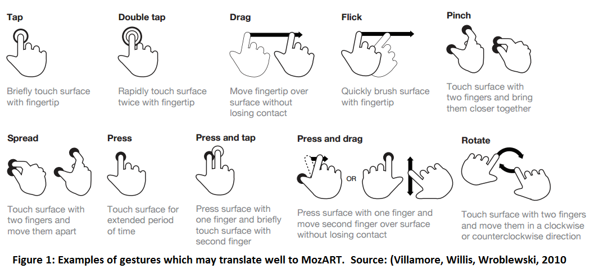
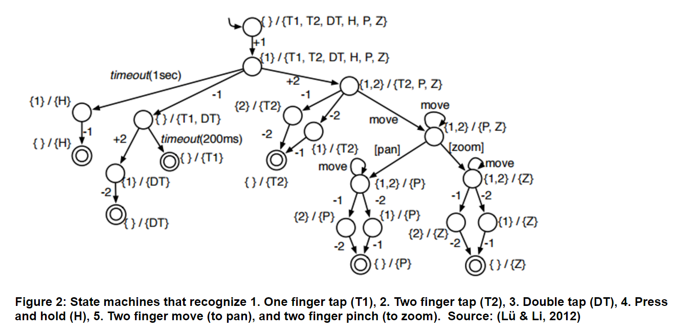

Introducing Complex Gestural Inputs into a Tangible Musical Installation
Astrid Farmer | 43527193
View the report in PDF form here: PDF
Abstract:
This report aims to conduct an exploration into various methods of incorporating gesture-driven inputs into a musical installation, and the complexities involved with algorithmically mapping these data streams into a form which can provide sound control which is replicable and believable. It will serve as an avenue through which the future development possibilities of the MozART instrument, developed at The University of Queensland, can be considered and explored to inform the next iteration of the project. Examples of similar projects will be included to investigate the solutions and problems they faced, as well as this being related to further research done in the area of gestural interactions and algorithmic mapping.
Touch Interactions in the Prototype:
MozART is a physical computing project which has been designed as a means by which to explore creating music in a new and tangible way by employing a spandex screen paired with human interaction in the form of pushes and touches. These interactions with the spandex are detected by the Microsoft Kinect depth sensor and transformed into synthesised music and interactive visuals which are rear-projected back onto the spandex. Although the current prototype includes sufficient performance qualities, there is little space to move forward in terms of musical composition and expression with the current solution of simple mapping of data streams tracking individual touches into MIDI data used to create the music. Observations of user interactions with the system have revealed immense opportunity to redesign the prototype to support gesture-driven synthesis of music, which would open up better possibilities for future performances. In previous demonstrations of MozART these limitations have not been problematic due to the brief nature of many engagements with users, however, moving forward this is the biggest limiting factor in the overall success of the project.
In the current prototype, touches being tracked are reduced to single points or blobs from the perspective of the Kinect. As a consequence of this, things such as hand or arm positions and finger orientation are rendered indistinguishable, eliminating many of the opportunities for traditional gestures one might use on a touchscreen from being carried across and utilised in the new interaction space. This limitation of touches rendering as blobs does, however, provide the possibility of abstracting them out to act as though they were individual fingers taking part in traditional gestures, with the hopes that this may ease the transition of a new user into the system.
The tactility of the spandex canvas incites various techniques of interaction to emerge from the different performers and people playing with the instrument, ranging from simple soft touches to large sweeping motions. In the current form of the prototype, having multiple points of contact in a single section of the spandex produces only a minor effect of which most is masked by the similarity in the two notes being played. Looking at touchscreen gestures, it appears that many of them could directly apply to MozART. Due to the close resemblance of multiple blobs to some standard multi-finger gestures, it seems absurd not to manipulate existing techniques and technologies to pioneer this new implementation.

As a simple example, a pinching gesture consisting of two fingers allows a touchscreen system to include an extra layer of functionality from what may have originally been two separate fingers happening to collide from a roughly parallel position, such as a zooming in or zooming out effect. Adding these extra gestural complexities to the project would open up a number of possibilities and new forms of interaction with the system which may more closely align with what people are expecting when they use the system for the first time. However, steps should be taken to ensure that the gestural inputs are able to enhance, rather than detract, from the overall user experience (Jack, Stockman, & McPherson, 2016).
Gesture Recognition:
A useful example of gesture recognition is Gesture Coder, an Eclipse plugin for developing on Android touch devices (Lü & Li, 2012). The details of touch detection and pre-processing which occurs in touchscreen devices is beyond the scope of this report, however the approach taken when identifying gestures is directly applicable to the addition of gestural inputs in MozART.
A number of factors come into this recognition tracking, including 1) whether additional touches occur after the initial touch, as well as 2) whether any motion is occurring which is significant enough to warrant inclusion of moving gestures in the set of possible gestures, and 3) analysing the relative motion of the touches, if any, to further rule out gestures e.g. whether pinching in or out is occurring (Damaraju & Kerne, 2009) (Lü & Li, 2012). Handling complex transitions between states resulting from multiple touches is a complicated challenge, especially given simultaneous movements (Damaraju & Kerne, 2009). Streams of continuous feedback must be established to ensure that actions can be incrementally updated to reflect their states, such as knowing the scale of a zoom gesture to apply the effect in real time as opposed to at the conclusion of the gesture (Lü & Li, 2012).
In the case of Gesture Coder, all trained gestures are included in the set of possible gestures when a new touch event occurs (Lü & Li, 2012). At each new frame, gesture types in the set are checked against the touches to determine whether they are compatible. If they are not, the gesture type will be marked as ‘failed’, and they will otherwise be marked as ‘possible’. Once a gesture is identified, if all but one gesture types in the set were marked as ‘failed’, the recognised gesture will then be categorised as ‘begun’ (Lü & Li, 2012). It will be marked as ‘changed’ if any new touches occur, and if this new event causes the gesture to no longer be recognised it will be marked as ‘cancelled’ (Lü & Li, 2012). If user input ceases, and the gesture had up until that point been marked as ‘recognised’, it will finally be marked as ‘finished’ (Lü & Li, 2012). As real-time synthesis of music to match the gesture would also need to be occurring, it is illogical to trigger a change in sounds at the conclusion of a gesture because it dulls the expressivity intended by the instrument.

The figure above, from the Gesture Coder report, outlines the structure which is employed when determining which gesture is occurring when a new touch event happens (Lü & Li, 2012). Though it describes touchscreen events, it provides a useful illustration of the type of state machine that could be used when developing gestural inputs for MozART. It depicts the various states and determining factors used in decision making when event sequences (order or number of touches) are identical, such as timeouts for gestures that need to be held, and relative motion for other gestures (Lü & Li, 2012).
Gesture-driven Composition:
Investigations into the area of gesture-driven composition done by French researchers at the Institute for Research and Coordination in Acoustics/Music in Paris revealed that “In terms of expressivity, however, just as important as the capture of the gesture itself is the manner in which the mapping of gestural data onto synthesis parameters is done” (Rovan, Wanderley, Dubnov, & Depalle, 1997). Paul Doornbusch outlines his approach to this problem as trying “to map from compositional gestures to musical parameters in such a way that the gesture is evident when [he listens] to the result” (Doornbusch, 2003). The complexity of this issue seems to stem from the fact that some “behaviours are more easily physically performed than mathematically described” (Heinrichs & McPherson, 2016). Incorporating these human forms of expression into the computational process to synthesise the sound is difficult, and requires quite precise algorithmic processing to ensure it can both be replicated consistently by the user and is reflective of the original action. Simple manipulation and playback of samples is not sufficiently effective in conveying the kind of interaction needed, which is why synthesis of sound is required to “match or supersede the aesthetic expressivity afforded” (Heinrichs & McPherson, 2016).
In conclusion, further empirical investigations and potential future inclusion of new gesture-driven inputs into the next iteration of the MozART project could provide the means by which this newly developed instrument becomes a recognisable contribution and functioning instrument in the space of interactive music technologies. Though these gestural inputs would require extensive re-development of the prototype, they would provide significant improvements in the expressive capabilities of MozART in the hands of a performer. It is therefore worth considering these ideas and conclusions when moving forward with future developments involving MozART or indeed to inform an entirely new project.
Bibliography
Damaraju, S., & Kerne, A. (2009). Multi touch Gesture Learning and Recognition System. Retrieved from Interface Ecology Lab at Texas A&M University. http://ecologylab.net/research/publications/tabletop08-posterAbstract1-6.pdf
Doornbusch, P. (2003, January). Composers' views on mapping in algorithmic composition. Retrieved from Interactive Information Institute, RMIT University: https://www.researchgate.net/publication/230639616_Composers'views_on_mapping_in_algorithmic_composition
Heinrichs, C., & McPherson, A. (2016, February 14). Performance-Led Design of Computationally Generated Audio for Interactive Applications. Retrieved from TEI '16 Proceedings of the TEI '16: Tenth International Conference on Tangible, Embedded, and Embodied Interaction: http://dl.acm.org/citation.cfm?id=2854109
Jack, R., Stockman, T., & McPherson, A. (2016, February 14). Navigation of Pitch Space on a Digital Musical Instrument with Dynamic Tactile Feedback. Retrieved from TEI '16 Proceedings of the TEI '16: Tenth International Conference on Tangible, Embedded, and Embodied Interaction: http://dl.acm.org/citation.cfm?id=2839503
Lü, H., & Li, Y. (2012, May 5). Gesture Coder:A Tool for Programming Multi-Touch Gestures by Demonstration Retrieved from CHI '12 Proceedings of the SIGCHI Conference on Human Factors in Computing Systems: http://dl.acm.org/citation.cfm?id=2208693
Mailman, J., & Paraskeva, S. (2013). Continuous Movement, Fluid Music and Expressive Immersive Interactive Technology: The Sound and Touch of Ether's Flux. Retrieved from Sound, Music and Moving-Thinking Body:http://www.joshuabanksmailman.com/writing/scholarly_writing/Continuous_Movement_Fluid_Music.pdf
Rovan, J., Wanderley, M., Dubnov, S., & Depalle, P. (1997, December). Instrumental Gestural Mapping Strategies as Expressivity Determinants in Computer Music Performance. Retrieved from University of California Center for New Music & Audio Technologies: http://cnmat.berkeley.edu/system/files/attachments/kansei_final.pdf
Villamor, C., Willis, D., & Wroblewski, L. (2010, April 15). Touch Gesture Reference Guide. Retrieved from LukeW Ideation & Design: http://static.lukew.com/TouchGestureGuide.pdf